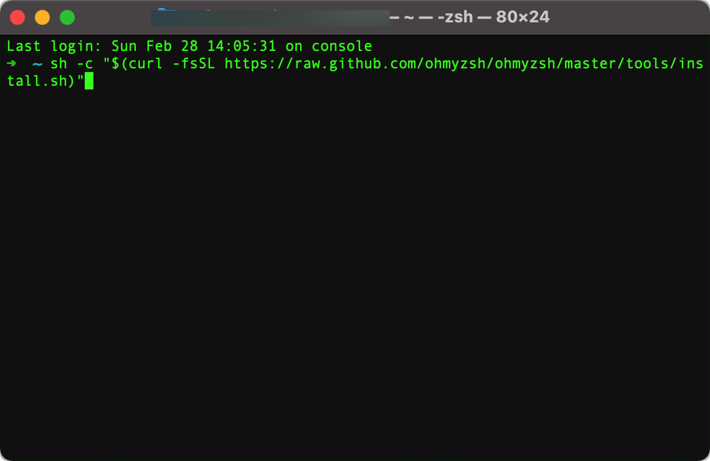
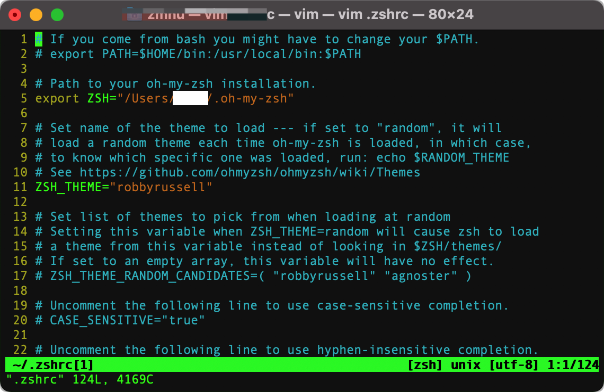
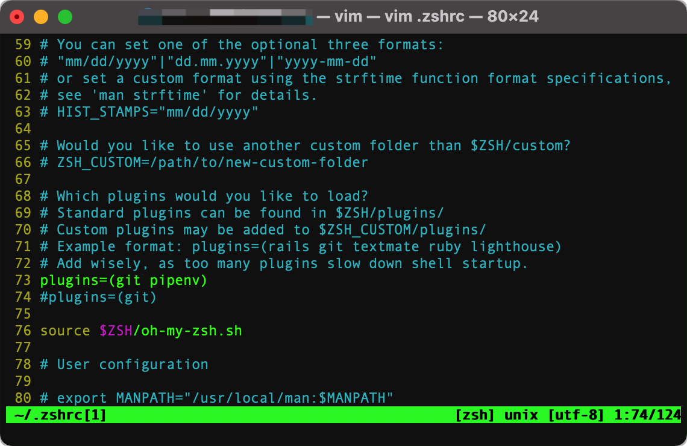
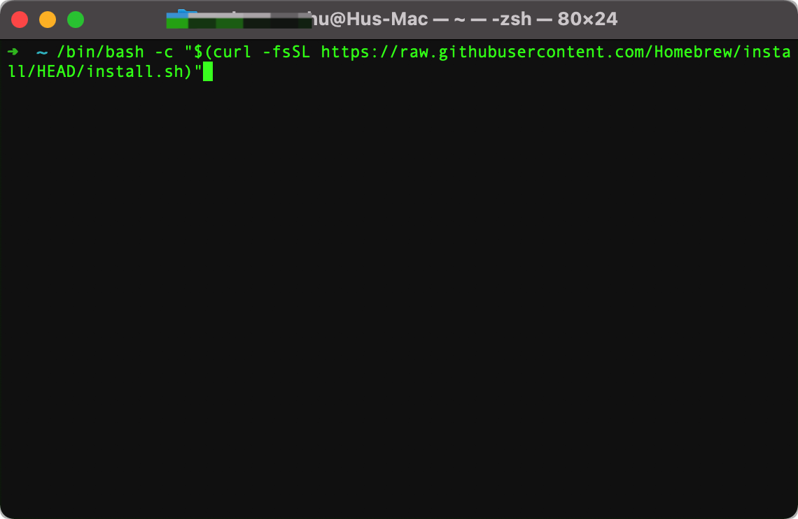
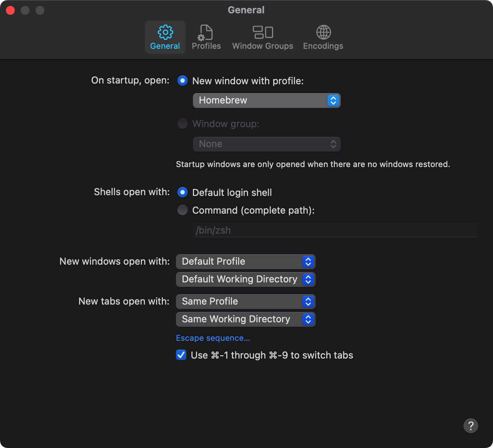
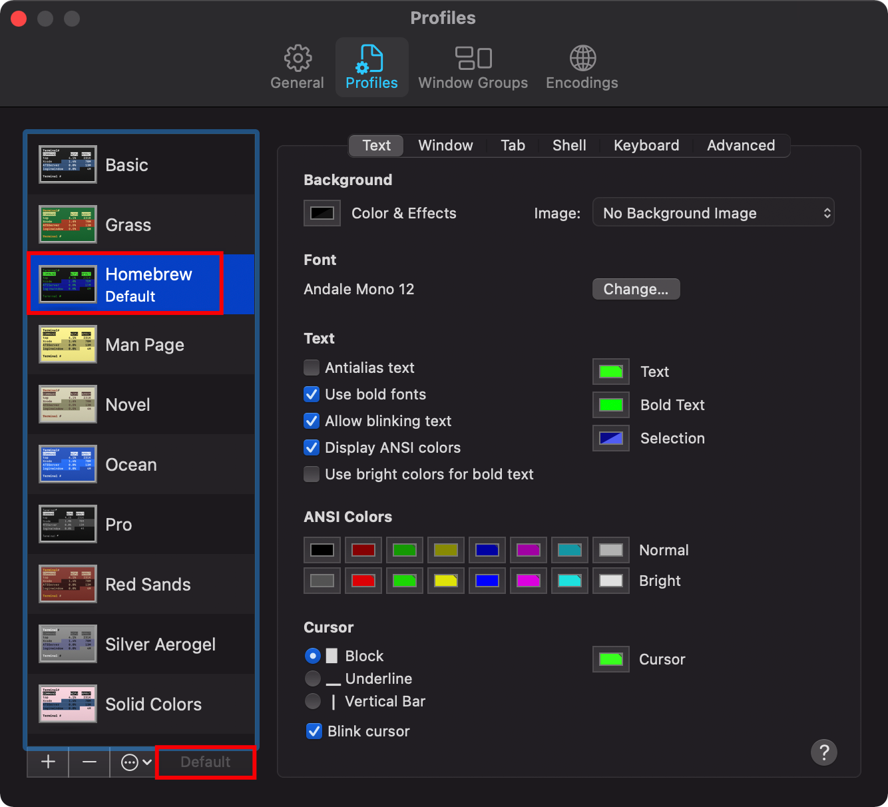

Terminal
本集是给技术小哥哥或是小姐姐们看的，如果是非技术从业者或是爱好者，对命令行特别讨厌的就略过吧。
本期视频将介绍MacOS的Terminal高效的使用方法，初级水平。
我想这也是戴码喜欢MacOS的原因之一吧。
oh-my-zsh
美化Terminal，美化应该是最重要的，没有之一吧:) 之前不知道为什么无脑的说oh my zsh是美化，我也是醉了，刚刚处理视频的时候听到了，唉！没有办法，只能这样了。 这里纠正一下，oh my zsh是对shell的一个很强大的扩展程序，没有美化功能:(
安装
sh -c "$(curl -fsSL https://raw.github.com/ohmyzsh/ohmyzsh/master/tools/install.sh)"如图： 
安装主题
- Themes
- 找到适合你的一款
- 修改 ~/.zshrc 文件 中的ZSH_THEME="your theme"

- 安装插件
- 插件地址：github
- 修改 ~/.zshrc 文件中的plugins=(....)
- eg: 两个插件： git 和 pipenv就写成plugins=(git pipenv) 如下图

homebrew
安装从Linux移植过来的软件
- 安装
/bin/bash -c "$(curl -fsSL https://raw.githubusercontent.com/Homebrew/install/HEAD/install.sh)"

- 把Terminal的profile改成homebrew，颜色方案更好


当然只要你喜欢，你可以换成任何profile，不影响你使用homebrew
更多的内容请参考homebrew官网